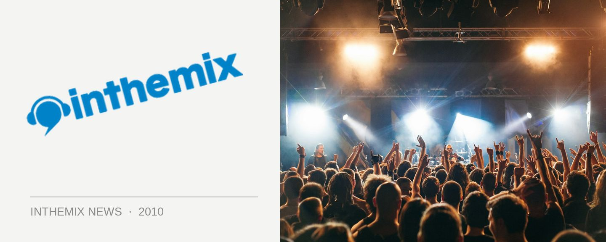

ITM's New Year photo coverage
What were you getting up to over New Years? This season there was a wider variety of events across the country that ever before, from old favourites like Summadayze in Melbourne and Field Day in Sydney, to new entries like Space Ibiza in Sydney and the second coming of Sensation. Not to mention events like Heaven and Earth in Adelaide and Origin in Perth that made sure every corner of the country was covered with good music.
Did you bring in 2010 with style? Check out ITM’s photo galleries from right across the country for a taste of everything that went down.
Sydney
> Shore Thing, Bondi
> Summanights, Home Nightclub
> Harbour Party, Luna Park
> Field Day, The Domain
> Space Ibiza, Moore Park
> Ministry of Sound Classics, Ivy
> Pacha NYE, Ivy
Melbourne
> Sensation, Etihad Stadium
> Summadayze, Myer Music Bowl
> Pyramid Rock Festival, Phillip Island
Brisbane
> New Year at Empire, Empire
> New Year at The Met, The Met
> New Year at Family, The Family
Perth
> Derrick Carter + D Ramirez, Shape
> Club Paradiso NYD, Burswood
> Summadayze, Perth
Want more new, interviews, DJ mixes and clips from some of the events that went down over the last few days? Check out ITM’s Festival Pages for more content than you can poke a stick at.